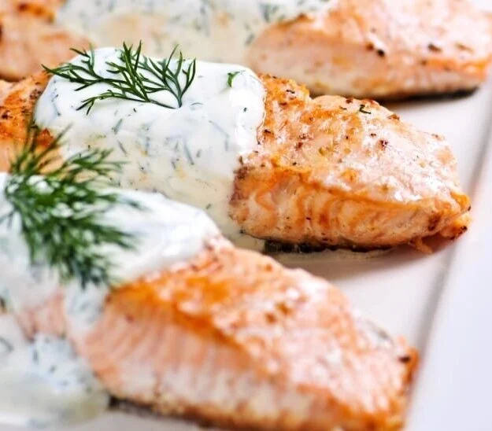

Norwegian Salmon with Dill Sauce

Description
Salmon and dill go together like peas and carrots, offsetting and bringing out the best of each other's bright flavors.
With this dill sauce for salmon as the main course, plus a quick side salad or mixed vegetable saute, you'll have a heart-healthy meal ready in about 30 minutes.
This Christmas, treat your guests to succulent, melt in the mouth Norwegian Salmon with dill sauce.
Ingredients (4 servings)
- 4 Norwegian salmon fillet
- 160g yoghurt, plain
- 1 clove garlic
- 2 tbsp lemon juice
- 1 handful ofdill, fresh
- black pepper
- sea salt
Steps
- Preheat the oven to 220 °C. Lightly oil a roasting dish, or line a heavy baking sheet with foil
- Add the salmon and season with the tablespoon of lemon juice, pinch of sea salt, and freshly ground black pepper.
- Roast the Norwegian salmon in the oven until it's cooked through in the middle.
- Meanwhile make the sauce by whisking together the yoghurt, 2 teaspoons of lemon juice, dill, and garlic.
- Drizzle over the salmon and garnish with the remaining dill sprigs to serve.